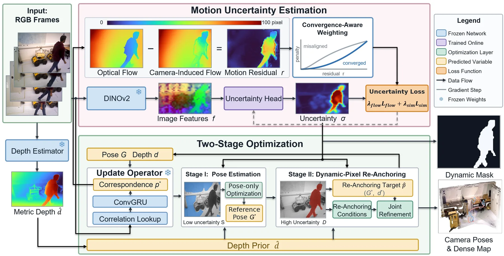
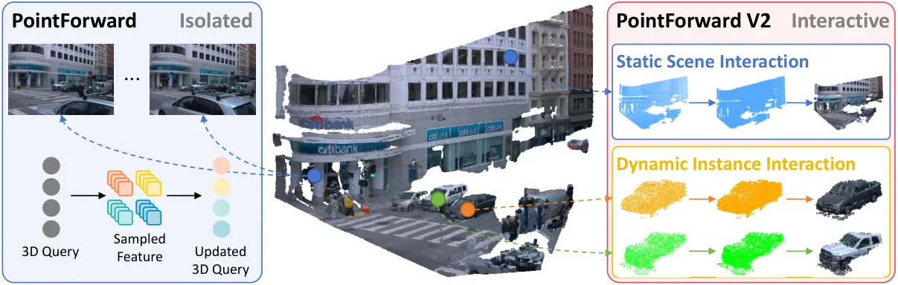
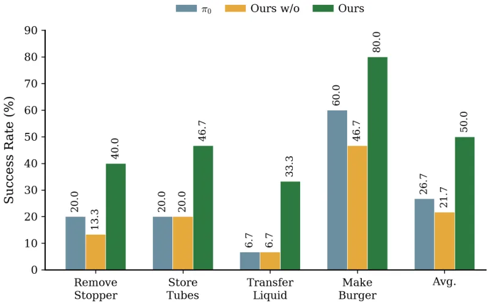
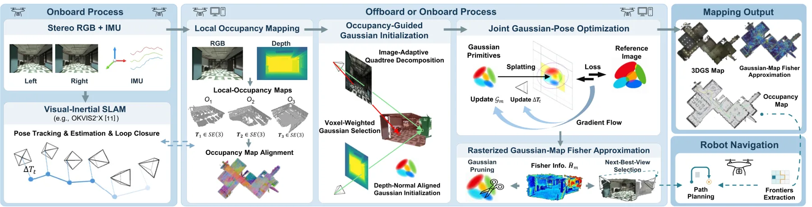
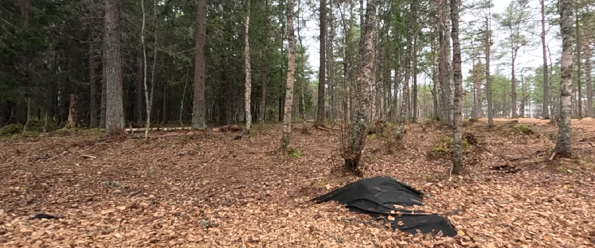
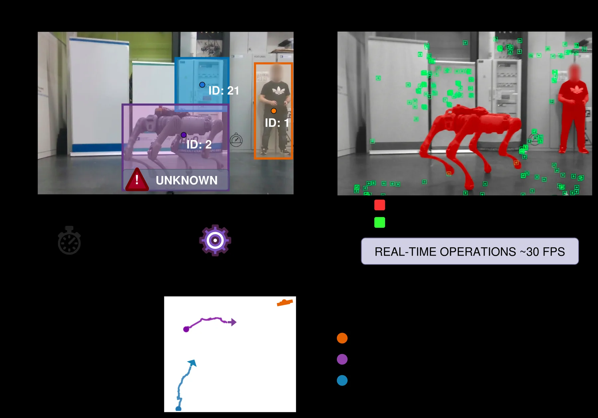
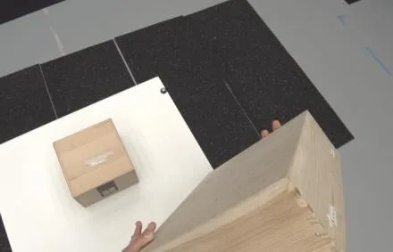

新论文 · 日期 2026-10-16 · score 23 · S层 · Geometry Foundation Models / 3D Foundation Models · cs.RO
内容级别：完整单篇海报
作者：Haorui Du, Lipu Zhou
评分 23/10
动态 SLAM单目光流残差运动不确定性两阶段优化重锚定DROID-SLAM动态掩码鲁棒 BA
一句话工作总结：把“光流减去相机运动流”的残差当作直接运动证据：残差大的像素说明相机运动解释不了它的位移，就是动态。残差经一个随中位数对齐质量自适应的鲁棒变换 ψ 送入高斯负对数似然，得到逐像素 σ；σ 由 DINOv2 特征经共享头回归，与几何变量交替优化。跟踪阶段先只用最低不确定性分位数像素、固定深度解位姿，再用这个“干净”参考位姿替换高不确定性像素的对应目标（re-anchoring）…
单目 SLAM 在动态场景中仍然困难，核心难点是实时判断哪些像素真的在动。近期方法从渲染残差或多视图特征不一致估计逐像素不确定性，但这些信号缺少直接的运动证据，在重建不准或特征模糊时会退化；而且这类不确定性只是在 BA 里给像素降权，估计错了仍然会污染位姿与深度。本文提出 FLoTS-SLAM：用光流与相机运动诱导流之间的残差构造运动不确定性，该不确定性随帧间对齐质量自适应变化，从而减少误检并给出像素级动态掩码；优…
Monocular simultaneous localization and mapping (SLAM) remains challenging in dynamic environments. Real-time dynamic object identification in such environments is a critical problem. Recent approaches estimat…

新论文 · 日期 2026-10-20 · score 14 · S层 · Geometry Foundation Models / 3D Foundation Models · cs.CV
内容级别：完整单篇海报
作者：Xianqi Wang, Cheng Chi, Yuechuan Pu, Hongcheng Luo
评分 14/10
前馈重建点对齐表示register 交互4D 位置编码驾驶场景3D Gaussian稀疏 3D 查询WaymonuScenes
一句话工作总结：在 PointForward 的稀疏 3D 查询表示上，把“信息如何交换”重新设计成 compress–communicate–broadcast：寄存器先从本帧静态查询压缩出场景摘要，寄存器之间做自注意力完成跨帧通信，再把上下文广播回点查询；动态实例则各自在自己的规范空间内用独立寄存器交互，互不串味。4D RoPE 只加在点一侧的 query–register 交叉注意力上…
动态驾驶场景的前馈重建需要把多视角、多时刻的观测整合进一致的 3D 表示。PointForward 把图像观测提升为稀疏 3D 查询，证明了点对齐表示的有效性，但这些查询基本是各自独立处理的，跨空间与时间的信息交换受限，而对数万个点查询直接做全局注意力在算力上不可行。本文提出 PointForward V2：用紧凑的、符合场景结构的 register 来中介查询交互——静态背景用逐帧的 Static Scene R…
Feedforward reconstruction of dynamic driving scenes requires integrating observations across multiple views and time steps into a coherent 3D representation. PointForward established state-of-the-art feedforw…

新论文 · 日期 2026-10-20 · score 10 · S层 · Geometry Foundation Models / 3D Foundation Models · cs.RO
内容级别：完整单篇海报
作者：Xiaoxu Xu, Hao Li, Hongtao Zhang, Yili Tang
评分 10/10
预测表征几何基础模型VLA世界动作模型VGGT特权监督表征解耦LIBEROWidowX
一句话工作总结：核心是“一个表征只干一件事”：预测几何表征要完整保留场景结构及其演化（重建 + 掩码预测 + 转移预测），运动表征只从几何转移里抽取与动作相关的成分（用动作块做 L1 监督）。两者在后训练阶段走不同通路进入策略：geometry queries 从当前输入推断预测几何，动作通路的中间特征对齐运动表征；推理时策略只用当前观测，表征模型与未来帧都不需要。LIBERO 平均 96.…
有效的操作策略不仅要理解当前场景几何，还要理解几何在交互下会如何演化。现有做法要么把当前观测的几何信息作为额外输入，要么把未来预测当作辅助监督，但没有回答“预测几何应该以什么形式表征才能服务动作生成”。本文提出两阶段框架：预训练阶段用冻结的 3D 基础模型提供稠密几何特征，经层次化查询编码器压缩成预测几何表征，并用几何重建、掩码表征预测与几何转移预测三个目标优化；随后把动作监督施加在几何转移上，提取互补的“运动表征…
Effective manipulation requires a policy to capture not only about the current scene geometry, but also about how that geometry will evolve under interaction. Existing approaches either augment policies with g…

新论文 · 日期 2026-10-18 · score 15 · A层 · Robust State Estimation / Uncertainty · cs.RO
内容级别：半海报
作者：Boxin Bu, Simon Boche, Haoming Zhang, Jaehyung Jung
评分 15/10
混合建图占据地图3D Gaussian SplattingFisher 信息子图下一最佳视角无人机探索VIO显存约束
一句话工作总结：把 OKVIS2-X 的占据子图当作骨架：每个子图同时持有位姿、占据地图、高斯原语与一份累积 Fisher 近似；位姿修正只作用在子图位姿上，高斯参数不用重优化就能跟着走。初始化用改进的四叉树双阈值分解加和面积表（O(1) 矩形求和），在线优化只优化活跃子图，并联合优化高斯与相机位姿；Fisher 通过对光栅化器反向传播喂全 1 上游梯度、只取位置与不透明度四维对角块来在线累…
本文提出 GOFusion，一个面向自主机器人导航的实时视觉建图系统：把 3D 高斯原语锚定在局部占据地图上，同时提供路径规划所需的空间感知与高保真外观。系统在视觉惯性 SLAM 给出的位姿与局部占据子图上构建高斯地图，并让位姿修正同时维持几何与视觉一致性；3DGS 优化被限制在当前活跃子图内以约束显存。基于外观丰富的高斯地图，作者提出与光栅化器集成的 Fisher 近似，在线量化每个原语的敏感度，作为高斯剪枝与下…
In this letter, we present GOFusion, a real-time visual mapping system for autonomous robot navigation that anchors Gaussian primitives to local occupancy maps, providing both spatial awareness for path planni…

新论文 · 日期 2026-10-16 · score 13 · B-层 · Traditional LiDAR/Visual SLAM · cs.RO
内容级别：简报式摘要
作者：Jan Steckel, Vincent Katter, Wouter Jansen
评分 13/10
声呐 SLAM6-DoF位姿图回环检测CFAR非视觉感知林地
一句话工作总结：把声呐从平面避障传感器升级成 6-DoF SLAM 的主传感器：球面 CFAR 检测得到稀疏 3D 点，声学里程计显式建模波束形状，极坐标子图描述子做位置识别，3D 配准验证回环，最后进入带姿态因子的 6-DoF 位姿图。545 m 林地实测，回环把水平误差 1.74 m 压到 0.28 m，高度误差 0.12 m，94.6% 地图落在激光参考 0.3 m 内。
蝙蝠靠声呐在密林中导航，而空中 3D 成像声呐现在每次发射就能覆盖整个前半球。此前的声呐 SLAM 都是平面的：只估计 2D 轨迹并丢弃声呐图像中的俯仰信息，这在起伏地形（如林地）上不成立。本文提出 RTISSLAM-3D，一个面向搭载空中 3D 成像声呐、IMU 与轮式编码器的轮式机器人的 6-DoF SLAM 系统：用球面 CFAR 检测把每帧声呐图压成稀疏 3D 检测点，据此做建模声呐波束形状的 3D 声学里…
Echolocating bats navigate dense forests using sonar alone, and in-air 3D imaging sonars now capture the entire frontal hemisphere with every pulse. Sonar SLAM, however, has so far been planar: current systems…

新论文 · 日期 2026-10-20 · score 14 · cs.RO
内容级别：简报式摘要
作者：Gaia Borghi, João Carlos Virgolino Soares, Angelo Bratta, Shahab Heshmati-Alamdari
评分 14/10
动态 vSLAM类别无关全景分割物体级跟踪ORB-SLAM3RGB-D实时
一句话工作总结：不改 ORB-SLAM3 前端主体，而是在感知侧加一条“按需全景分割 + 未知物体深度聚类 + 时序掩码传播”的管线：已知类别靠全景分割，未知运动物体靠深度聚类发现，帧间用世界系卡尔曼预测与深度、外观一致性维持轨迹，再把物体运动反投影成动态特征剔除。未知动态物体场景误差降 59%、重度遮挡降 88%，中位 30 FPS。
动态环境下的视觉 SLAM 会被运动物体污染观测、破坏地图并降低定位精度。现有方法多依赖预定义语义类别或昂贵的逐像素分类，限制了鲁棒性与适用性。本文提出 CAOS-SLAM，在 ORB-SLAM3 上扩展一套混合感知管线，实时检测、跟踪并过滤“语义已知”与“此前未见”的运动物体：按需做全景分割做物体发现，未分类区域用基于深度的聚类实例化候选未知物体；全景更新之间，持久物体轨迹用轻量检测或基于世界系卡尔曼预测、深度一…
Robust visual Simultaneous Localization and Mapping (vSLAM) in dynamic environments faces challenges due to the presence of moving objects that may introduce erroneous observations, corrupt the map reconstruct…

新论文 · 日期 2026-10-20 · score 3 · cs.CV
内容级别：简报式摘要
作者：Ruicheng Li, Qixiu Li, Yu Deng, Sicheng Xu
评分 3/10
自中心视频手部重建相机轨迹V-JEPA前馈模型度量尺度
一句话工作总结：一个模型、一次前向同时出手部与相机：V-JEPA 2.1 提全帧时空特征，query 预测器解码双手姿态与存在性以及相机运动，再用相机运动把手部放到共同世界系。训练用伪标注视频加高精度 3D 标注端到端单阶段，支持已知或预测焦距。零样本 MPJPE 最低，世界系轨迹误差优于 SLAM 管线，93.4 FPS。
自中心视频支持机器人学习、AR 与人类活动理解等应用。要从这类视频恢复度量 3D 手部轨迹，必须同时估计手部运动与相机自运动，把双手表达在同一参考系里。现有管线把两者分开做：手部检测、手部重建、相机跟踪、轨迹精化多阶段拼接。本文提出 V-JEPA Hand，一个简单的前馈视频模型，从自中心片段联合重建双手运动与相机运动：用自监督 V-JEPA 2.1 编码器提取全帧时空特征，再用基于 query 的预测器解码出逐帧…
Egocentric video supports diverse applications, including robot learning, augmented reality, and human activity understanding. Recovering metric 3D hand trajectories from such video requires estimating both ha…